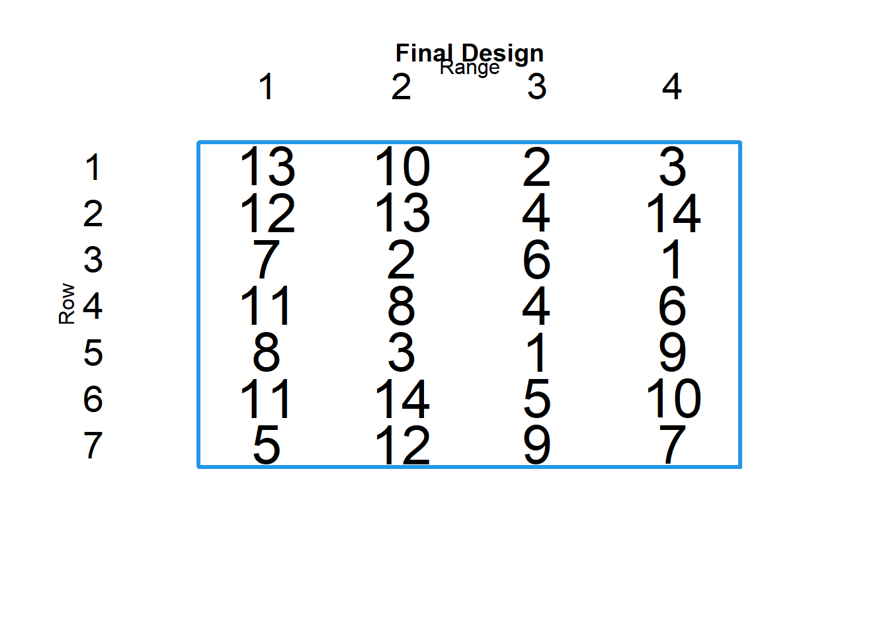

Chapter 5 Experimental Design and Field Preparation
RStudio can help us in preparing the distribution of entries in our field, according to specific experimental designs. For more information in the design of on-farm cultivar trials, we strongly suggest this booklet.
We will cover three types of design:
Randomized Complete Block Design (RCBD)
- In this design, every treatment (genotype) is in every block. However, every block has a different randomization of the treatments.
Incomplete Block Design (IBD)
- In this case, the number of treatments is bigger that the number of plots in a block, so every block has a different set of treatments.This type of design is specially used when we have a very large amount of genotypes.
Partially Replicated Block Design (PRBD)
- A reduced number of genotypes, called checks, are present in every block. The other genotypes are only present once in the design.
5.1 DiGGer
DiGGer is a very useful and used package that does experimental design by optimizing row-column arrangements. However, unlike many other packages in R, it is not on the CRAN repository and must be requested to the creators through this site. To properly install the package on your RStudio, you can follow the next steps.
Step 1:
- Go into the link and request the DiGGer package by writing your mail. You will briefly receive a compressed file with several files inside. Among them, you have a Quick Guide and a (longer) User Guide. You can
Step 2:
- Create a directory in your computer called “Experimental Design.” We reccomend to create it inside “Documents” or in any other directory that you have specially created for R Studio and PPB projects. Place the compressed file in this directory and decompress it. You should be able to see all the files that where once inside.
Step 3:
Set the RStudio working directory of R in the folder that contains the decompressed files. To check, you can use the function list.files() in your working directory, to see if you are in the right directory with the required files. You should see something like this:
setwd("C:/Users/Usuario1/Google Drive/RSR/Digger") #Momentary change of WD
list.files(getwd())## [1] "DiGGer_1.0.5.tgz"
## [2] "DiGGer_1.0.5.zip"
## [3] "DiGGer_1.0.5_R_x86_64-redhat-linux-gnu.tar.gz"
## [4] "DiGGerQuickGuide.pdf"
## [5] "DiGGerUserGuide29042019.pdf"
## [6] "oldDiGGer_1.0.5_R_x86_64-pc-linux-gnu.tar.gz"
## [7] "oldExe.zip"
## [8] "oldR.zip"
## [9] "Readme.txt"Step 4:
Now, you are ready to install the package. Both the “.tgz” and the “.zip” files could work depending on your operation system. For Windows users, the “.zip” should work better.
#install.packages("DiGGer_1.0.5.zip", repos = NULL)For Linux and Mac users, the “.tgz” exxtension should work:
#install.packages("DiGGer_1.0.5.tgz", repos = NULL)You might get some warning messages, but as long you don’t receive error messages, we are on the right track. To finalize, you can call the package, and check if everything is alright
library(DiGGer)5.1.1 Randomized Complete Block Design!
Let’s start with an example in which we have 14 different varieties. I will make a vector with their names, which, to simplify, they will be “Var. A,” “Var. B,” up to “Var. N.”
variety.list = c("Var. A","Var. B", "Var. C","Var. D",
"Var. E", "Var. F", "Var. G", "Var. H",
"Var. I", "Var. J", "Var. K", "Var. L",
"Var. M", "Var. N")We will use the function corDiGGer(). But, before running the function, some important aspects should be discuted.
First, that the function will not work if the design is not “resolvable”. That is, for this design, the amount of treatments should be a multiple of the total amount of plots, so that the design is completely balanced. For example, if we have 14 treatments, we could have 28 total plots (14 * 2 ), 42 total plots (14 * 3), and so on.
Second, even if we have several farms and locations with the same number of entries and plots, we need to do a new RCBD for each one of them. Repeating the same design through several locations is a typical mistake in the design of PPB programs.
Third, every time that the function is run, the randomization will be redone. This is useful if we want new randomizations for each new farm or location, but could be a constrain if we want to keep proper record of our work. The randomization could be fixed by using the optional argument rngSeeds, which takes two numbers that uses as seed of the randomization process, and allows to “fix” a given randomization
So, the function looks like this
mydesign <- corDiGGer(numberOfTreatments= 14, # 14 treatments or genotypes
rowsInDesign = 4, # 4 rows in the design
columnsInDesign = 7, # 7 columns in the design
treatRepPerRep = 1, # Every block has only one rep per genotype
rowsInReplicate = 2, # Every block has two columns
treatName = variety.list, # Here I introduce my name vector.
rngSeeds = c(1,999)) # This fixes the randomization, so your results and ours are the sameOnce done, we could inmediatly do a plot with plot.diGGer
plot.DiGGer(mydesign)
So, we chose to name our resulting object mydesign, which has different objects inside, the most imporant ones are
- mydesign$ddphase
- mydesign$dlist
mydesign$ddphase has, as the first element, a map of the field with the respective entry number.
mydesign$ddphase ## [[1]]
## [[1]]$design
## [,1] [,2] [,3] [,4] [,5] [,6] [,7]
## [1,] 8 10 3 14 7 9 6
## [2,] 5 12 2 13 1 11 4
## [3,] 10 1 8 4 14 2 9
## [4,] 13 6 12 3 11 7 5
##
## [[1]]$aMeasures
## [1] 0.6976722 0.6976722
##
## [[1]]$lastImprovement
## [1] 90501To show only the map, we need a more specific approach.
mydesign$ddphase[[1]]$design## [,1] [,2] [,3] [,4] [,5] [,6] [,7]
## [1,] 8 10 3 14 7 9 6
## [2,] 5 12 2 13 1 11 4
## [3,] 10 1 8 4 14 2 9
## [4,] 13 6 12 3 11 7 5The “[[1]]” indicates that we are taking the first elemet of the list. And then, we call exactly for the outcoming design. To handle it more easily, we could rename this map simply to “myfield”
myfield = mydesign$ddphase[[1]]$designAnd now, we could write it directly into excel with a “.csv” format. It will be saved in your working directory
write.csv(myfield, # Name of your R object
"My Field RCBD.csv") # Desired name of your excel fileThe other object, “mydesign$dlist” has more info, including the genotype name, the row-column position, and the block number. This could be exported as excel in the same way as before.
mydesign$dlist## UNIT ID ENTRY ROW RANGE REP TRT
## 1 1 Var. H 8 1 1 1 8
## 2 2 Var. E 5 2 1 1 5
## 3 3 Var. J 10 3 1 2 10
## 4 4 Var. M 13 4 1 2 13
## 5 5 Var. J 10 1 2 1 10
## 6 6 Var. L 12 2 2 1 12
## 7 7 Var. A 1 3 2 2 1
## 8 8 Var. F 6 4 2 2 6
## 9 9 Var. C 3 1 3 1 3
## 10 10 Var. B 2 2 3 1 2
## 11 11 Var. H 8 3 3 2 8
## 12 12 Var. L 12 4 3 2 12
## 13 13 Var. N 14 1 4 1 14
## 14 14 Var. M 13 2 4 1 13
## 15 15 Var. D 4 3 4 2 4
## 16 16 Var. C 3 4 4 2 3
## 17 17 Var. G 7 1 5 1 7
## 18 18 Var. A 1 2 5 1 1
## 19 19 Var. N 14 3 5 2 14
## 20 20 Var. K 11 4 5 2 11
## 21 21 Var. I 9 1 6 1 9
## 22 22 Var. K 11 2 6 1 11
## 23 23 Var. B 2 3 6 2 2
## 24 24 Var. G 7 4 6 2 7
## 25 25 Var. F 6 1 7 1 6
## 26 26 Var. D 4 2 7 1 4
## 27 27 Var. I 9 3 7 2 9
## 28 28 Var. E 5 4 7 2 5We could use this object, for example, to create a nice plot through ggplot
library(ggplot2)
ggplot(mydesign$dlist, aes(x= ROW, y = RANGE, label= ID, fill= ID))+
geom_tile()+geom_text()+ # Geometry for color tiles and labels
labs(x= "Row", y = "Column") #Axis labels
Finally, some might find it useful to export a map in excel, with the proper genotype names. To our knowledge, DiGGer does not provide a function for this, but there are many different ways to achieve it. A very easy way involves using the function replace() from the dplyr package.
library(dplyr)
myfield.withnames = replace(x=myfield, #The object to change will be "myfield
values = mydesign$dlist$ID ) # I will change every value, for the values found in the "ID" column of my "dlist"
myfield.withnames## [,1] [,2] [,3] [,4] [,5] [,6] [,7]
## [1,] "Var. H" "Var. J" "Var. C" "Var. N" "Var. G" "Var. I" "Var. F"
## [2,] "Var. E" "Var. L" "Var. B" "Var. M" "Var. A" "Var. K" "Var. D"
## [3,] "Var. J" "Var. A" "Var. H" "Var. D" "Var. N" "Var. B" "Var. I"
## [4,] "Var. M" "Var. F" "Var. L" "Var. C" "Var. K" "Var. G" "Var. E"Some small beautifying work, to change row and column names into simpler formats
rownames(myfield.withnames) = 1:4
colnames(myfield.withnames) = 1:7Now, it’s all set up to export into excel
write.csv(myfield.withnames,
"My Fiel RCBD with names.csv")5.1.2 Incomplete Block Design (IBD)
Now, imagine we have the same 14 varieties, and we have 7 farmers to whom distribute the seed. These farmer’s might have reduced space and it might 14 plots might be too much. We could, for example, give only 4 genotypes to every farmer.
So, every “Block” is a farm with 4 genotypes. These plots could be arranged in only one row of four columns, one column of four rows, or two rows and two columns. For this example, we will choose a “strip” trial, where every farmer has a single row with 4 different plots. Thus, every block has one row and 4 columns.
Again, in this case, not every combination is possible, as the design must be "resolvable. Again, the total number of plots must be equal to the number of treatments times the number of repetitions. For our case, it would look like this.
\[ Number\ of\ Blocks\ (Farms) * Plots\ per\ Block\ (Farm) = Number\ of\ Treatments\ * Reps\ per\ Treatment \] \[ 7*4 = 14*2\ 24 \] \[ 28 = 28 \]
Once that we are sure that our design is resolvable, we can use the function ibDiGGer() for the design. The arguments are the same as those of corDiGGer(), with the exception of the last “runSearch”. If this is not set as true, the output will only be a initial design, but with no optimization of the randomization. In this case, my resulting object will be called mydesignIB.
mydesignIB <- ibDiGGer(numberOfTreatments = 14,
treatName = variety.list,
rowsInDesign = 7, # Total of rows in the design is 7
columnsInDesign = 4, # Total of columns in the design is 4
rowsInBlock = 1, # Every Block (Farm) has only 1 row
columnsInBlock = 4, # And 4 columns
runSearch = T) # Run the optimization So, this is my design, where every row corresponds to a given farm, and no genotype is repeated within the same block. However, every treatment is at least twice on the design.
plot(mydesignIB)
The same elaboration that was done on the RCBD design can be done here. We will now run a simplified version.
myfieldIB = mydesignIB$ddphase[[1]]$design #Saving the design with a simpler name
myfieldIB.withnames= replace(x=myfieldIB,
values = mydesignIB$dlist$ID ) # Changing the numbers for actual namesBefore saving into excel, I want name every row as the farmer’s that will actually sow these plots. Then, I just name the columns from 1 to 4, and then, check it.
rownames(myfieldIB.withnames) = c("Pippo", "Rosario", "Ugo", "Giuseppe", "Marco", "Simone", "Giandomenico")
colnames(myfieldIB.withnames) = 1:4
myfieldIB.withnames## 1 2 3 4
## Pippo "Var. M" "Var. J" "Var. B" "Var. C"
## Rosario "Var. L" "Var. M" "Var. D" "Var. N"
## Ugo "Var. G" "Var. B" "Var. F" "Var. A"
## Giuseppe "Var. K" "Var. H" "Var. D" "Var. F"
## Marco "Var. H" "Var. C" "Var. A" "Var. I"
## Simone "Var. K" "Var. N" "Var. E" "Var. J"
## Giandomenico "Var. E" "Var. L" "Var. I" "Var. G"And finally, save it into excel
write.csv(myfieldIB.withnames,"Field Map IB with names.csv")
(2*7) + (12*2)## [1] 385.1.3 Partially Replicated Block Design
Partially Replicated designs arebit more complex, because now, the total number of plots must be equal to the sum the number of checks times the number of blocks, plus the number of tests times the number of repetitions for the tests. That is:
\[ No.\ of\ Blocks\ * Plots\ per\ Block\ = (No.\ of\ Checks\ * No. of Blocks) + (No.\ of\ Tests * Reps) \] For example, if we hadthe same 14 varieties. But, two of them (Var. A and Var. B) will work as controls in every block or farm (we will call them Checks), and the 12 remaining varieties will only have two repetitions (we will call them Tests). In order for the design to be resolvable, I must choose my number of blocks (farms) accordingly. For this, simple algebra could be used.
\[ n*4 = (2*n) + (12*2) \]
\[ n= 12 \] So, to complete this design, we would need 12 different farms, each with a 4 plot block
However, in real life, we don’t get to choose so freely the number of farms. Another example would be if we start from only 9 farms, and we still want to have 2 checks and an y number of test varieties repeated twice. Then, we would do the following.
\[ 9*4 = (2*9) + (y*2) \]
\[ y= 9 \]
In this case, because of the constraints of the design we could only include 9 of our 12 potential varieties. It is however possible, through DiGGER and other applications, to do other kinds of designs that do not satisfy these equations. For example, some farms with 5 plots and others with 4, but it would be an unbalanced design and the statistic methods used may change significantly.
5.1.3.0.0.0.0.0.0.0.0.0.0.0.0.0.0.0.0.0.0.0.0.0.0.0.0.0.0.0.0.0.0.0.0.0.1
Moreover, let’s do design for the first example, with 2 checks, 12 tests and 12 farms. Before using the respective prDiGGer() function, we might want to prepare to useful vectors.
So, out of our 14 genotypes, the first 2 will be repeated 12 times (once per block) and the rest will be only repeated twice. The vector “myreps” contains that info.
myreps =c(12,12,2,2,2,2,2,2,2,2,2,2,2,2)
# We can check that the number ofelements is right (should be 14)
length(myreps)## [1] 14# And we can check that the sum of the reps equals the number of plots (should be 12*4 = 48)
sum(myreps) ## [1] 48Now, we create the vector “mygroups” that assigns each genotype to a given group. As a convention, the genotypes in group 1 will be tests and those in group 2 will be checks.
mygroups = c(2,2,1,1,1,1,1,1,1,1,1,1,1,1)We are all set to run prDiGGer().
5.1.3.0.0.0.0.0.0.0.0.0.0.0.0.0.0.0.0.0.0.0.0.0.0.0.0.0.0.0.0.0.0.0.0.0.2
mydesignPR <- prDiGGer(numberOfTreatments = 14, # 14 treatments
rowsInDesign = 12, # 12 rows (one per farm)
columnsInDesign = 4, # 4 columns in the design
treatRepPerRep = myreps, # Reps per treatment
treatGroup= mygroups, # My groups vector
blockSequence = list(c(1,4)), # Every block will have four columns and one row
treatName = variety.list,
runSearch = T) ## Phase, Search%, A-measure
## [1] 1.0000000 0.0000000 0.1190476
## [1] 1.00000000 10.00000000 0.08333333
## [1] 1.00000000 20.00000000 0.08333333
## [1] 1.00000000 30.00000000 0.08333333
## [1] 1.00000000 40.00000000 0.08333333
## [1] 1.00000000 50.00000000 0.08333333
## [1] 1.00000000 60.00000000 0.08333333
## [1] 1.00000000 70.00000000 0.08333333
## [1] 1.00000000 80.00000000 0.08333333
## [1] 1.00000000 90.00000000 0.08333333
## [1] 1.00000000 100.00000000 0.08333333
## [1] 0.08333333 0.08333333 0.00000000 0.00000000 0.00000000 0.00000000
## [7] 0.00000000 0.00000000 0.00000000 0.00000000
## Phase, Search%, A-measure
## [1] 1.0000000 0.0000000 0.7261638
## [1] 1.0000000 10.0000000 0.7010528
## [1] 1.0000000 20.0000000 0.7010528
## [1] 1.0000000 30.0000000 0.7010528
## [1] 1.0000000 40.0000000 0.7010528
## [1] 1.0000000 50.0000000 0.7010528
## [1] 1.0000000 60.0000000 0.7010528
## [1] 1.0000000 70.0000000 0.7010528
## [1] 1.0000000 80.0000000 0.7010528
## [1] 1.0000000 90.0000000 0.7010528
## [1] 1.0000000 100.0000000 0.7010528
## [1] 0.7010528 0.7010528 0.0000000 0.0000000 0.0000000 0.0000000 0.0000000
## [8] 0.0000000 0.0000000 0.0000000
## Phase, Search%, A-measure
## [1] 1.0000000 0.0000000 0.7416035
## [1] 1.0000000 10.0000000 0.5979295
## [1] 1.0000000 20.0000000 0.5979295
## [1] 1.0000000 30.0000000 0.5979295
## [1] 1.0000000 40.0000000 0.5979295
## [1] 1.0000000 50.0000000 0.5979295
## [1] 1.0000000 60.0000000 0.5979295
## [1] 1.0000000 70.0000000 0.5979295
## [1] 1.0000000 80.0000000 0.5979295
## [1] 1.0000000 90.0000000 0.5965573
## [1] 1.0000000 100.0000000 0.5946287
## [1] 0.5946287 0.5946287 0.0000000 0.0000000 0.0000000 0.0000000 0.0000000
## [8] 0.0000000 0.0000000 0.0000000Ready to plot the new object called mydesignPR. We can check that treatments 1 and 2 are in every block, and all the rest are just present in two blocks.
plot(mydesignPR) 
To further save it, we proceed in the same way as before.
#Renaming the object
myfieldPR = mydesignPR$ddphase[[1]]$design
#Replacing numbers with names
myfieldPR.withnames= replace(x=myfieldPR,
values = mydesignPR$dlist$ID)
#Fixing column names
colnames(myfieldPR.withnames) = 1:4
#Changing row names to farm names (using paste() and seq())
rownames(myfieldPR.withnames) = paste( "Farm", seq(1:12))
#Final checking
myfieldPR.withnames## 1 2 3 4
## Farm 1 "Var. B" "Var. N" "Var. F" "Var. A"
## Farm 2 "Var. C" "Var. A" "Var. D" "Var. B"
## Farm 3 "Var. B" "Var. K" "Var. G" "Var. A"
## Farm 4 "Var. A" "Var. C" "Var. N" "Var. B"
## Farm 5 "Var. A" "Var. I" "Var. E" "Var. B"
## Farm 6 "Var. B" "Var. F" "Var. H" "Var. A"
## Farm 7 "Var. B" "Var. M" "Var. L" "Var. A"
## Farm 8 "Var. M" "Var. A" "Var. I" "Var. B"
## Farm 9 "Var. A" "Var. E" "Var. D" "Var. B"
## Farm 10 "Var. H" "Var. B" "Var. K" "Var. A"
## Farm 11 "Var. B" "Var. L" "Var. J" "Var. A"
## Farm 12 "Var. A" "Var. G" "Var. B" "Var. J"#Exporting to excel
write.csv(myfieldPR,"Field Map PR with names.csv")5.2 Agricolae
Another package that can be used for randomizations is “agricolae.” It uses simpler algorithms, and, most importantly, does not prepare the field in a row-column matrix, but only gives a lineal order of the plots. The package can be installed easiliy by typing:
install.packages("agricolae")Once installed, the package should be “called,” by typing:
library(agricolae)This package offers a wide array of designs that can be consulted in it’s documentation. We will only cover here the case of theRandomized Complete Block Design (RCBD) and Partially Replicated Block Design.
5.2.1 Randomized Complete Block Design
In Agricolae, this type of design is obtained through the the function design.rcbd() . To learn more about this function, and how to write the proper arguments, one could type:
?design.rcbdSo, to apply the function, the first argument should be the object containing our variety list (that we prepared before). The “r” argument indicates the number of blocks or repetitions. The “serie” arguments just indicates which type of numeration to have for the plot, in this case, we will choose “serie= 2,” so that the first plot on our first block has the number “101.”In this case, we use also the “seed” argument and assign an arbitrary number (‘12345’), which allows for you and me to have the same results, despite randomization.
myfield.agricolae <- design.rcbd(variety.list, # My variety List
r= 2, # Number of repetitions
serie= 2, # Plot numeration style
seed= 12345) # Fix randomizationThe object “myfield.agricolae” contains now three different elements. It contains the paramenters used for the design, a field sketch and a “Fieldbook.” Each of these elements can be called using the ‘$’ symbol in the following for:
myfield.agricolae$book## plots block variety.list
## 1 101 1 Var. G
## 2 102 1 Var. L
## 3 103 1 Var. F
## 4 104 1 Var. J
## 5 105 1 Var. B
## 6 106 1 Var. N
## 7 107 1 Var. D
## 8 108 1 Var. A
## 9 109 1 Var. K
## 10 110 1 Var. M
## 11 111 1 Var. C
## 12 112 1 Var. H
## 13 113 1 Var. E
## 14 114 1 Var. I
## 15 201 2 Var. D
## 16 202 2 Var. F
## 17 203 2 Var. M
## 18 204 2 Var. H
## 19 205 2 Var. L
## 20 206 2 Var. C
## 21 207 2 Var. G
## 22 208 2 Var. K
## 23 209 2 Var. A
## 24 210 2 Var. B
## 25 211 2 Var. I
## 26 212 2 Var. N
## 27 213 2 Var. J
## 28 214 2 Var. EAny of these objects could be exported into an excel or .csv file in your computer, both for an easier manipulation and to potentially prepare a file to take data evaluations. To export as an .csv, the function write.csv() comes in handy.
write.csv(myfield.agricolae$book, "myfield.agricolae.csv", row.names = F)However, this is only a list (that is however useful), but we would like to have a map. For that purpose, we could the function matrix() , and indicate that we want the rows divided into 4 columns (if that is the case)
myfield.matrix = matrix(
myfield.agricolae$book$variety.list, #Taking only the varieties names from the fieldbook.
ncol=4) #Number of columns in the field.
myfield.matrix ## [,1] [,2] [,3] [,4]
## [1,] "Var. G" "Var. A" "Var. D" "Var. K"
## [2,] "Var. L" "Var. K" "Var. F" "Var. A"
## [3,] "Var. F" "Var. M" "Var. M" "Var. B"
## [4,] "Var. J" "Var. C" "Var. H" "Var. I"
## [5,] "Var. B" "Var. H" "Var. L" "Var. N"
## [6,] "Var. N" "Var. E" "Var. C" "Var. J"
## [7,] "Var. D" "Var. I" "Var. G" "Var. E"This could as well be exported into a .csv file.
write.csv(myfield.agricolae.matrix, "myfield.matrix.csv")5.2.2 Partially Replicated Block Design
Agricolae calls this kind of design as “Augmented Block Design.” To execute it, a very similar function is used, called design.dau()
However, for this case, two different variety lists are needed, one containing the “check” varieties (to be present in all blocks) and the “new” varieties (to be present only once). We could use the R grammatics to select only the first two elements from the previous variety list, and name them as our checks.
variety.checks = variety.list[c(1,2)]
variety.checks## [1] "Var. A" "Var. B"And another object with only the remaining elements of the list.
variety.new = variety.list[c(3:14)]
variety.new## [1] "Var. C" "Var. D" "Var. E" "Var. F" "Var. G" "Var. H" "Var. I" "Var. J"
## [9] "Var. K" "Var. L" "Var. M" "Var. N"Then, we are ready to apply the function:
myfieldabd.agricolae = design.dau(trt1= variety.checks, # Check varieties
trt2= variety.new, # New varieties
r = 2, # Number of repetitions
seed= 12345) # Fix randomizationAgain, we have several objects within “myfieldabd.agricolae.” To see how varieties were distributed through blocks, we cab see the “book” object within “field.adb.”
myfieldabd.agricolae$book## plots block trt
## 1 101 1 Var. E
## 2 102 1 Var. M
## 3 103 1 Var. C
## 4 104 1 Var. D
## 5 105 1 Var. N
## 6 106 1 Var. F
## 7 107 1 Var. A
## 8 108 1 Var. B
## 9 201 2 Var. H
## 10 202 2 Var. I
## 11 203 2 Var. J
## 12 204 2 Var. L
## 13 205 2 Var. B
## 14 206 2 Var. A
## 15 207 2 Var. K
## 16 208 2 Var. GWe confirm that varieties A and B are in both blocks, but the rest of the varieties are only represented once.
5.3 Organic Trials
Finally, the Organic Seed Alliance has also developed a beatiful R based web site that can prepare Randomized Complete Block and Partially Replicated Designs. If your designs are simple and it turns out more convenient for you, this link is a great option.